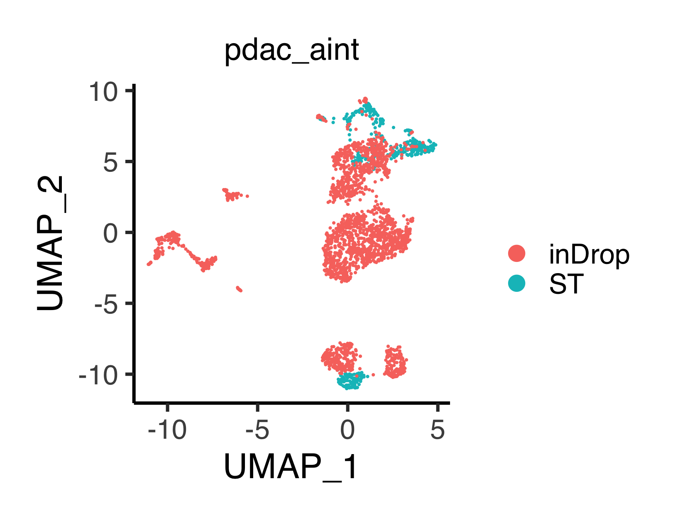
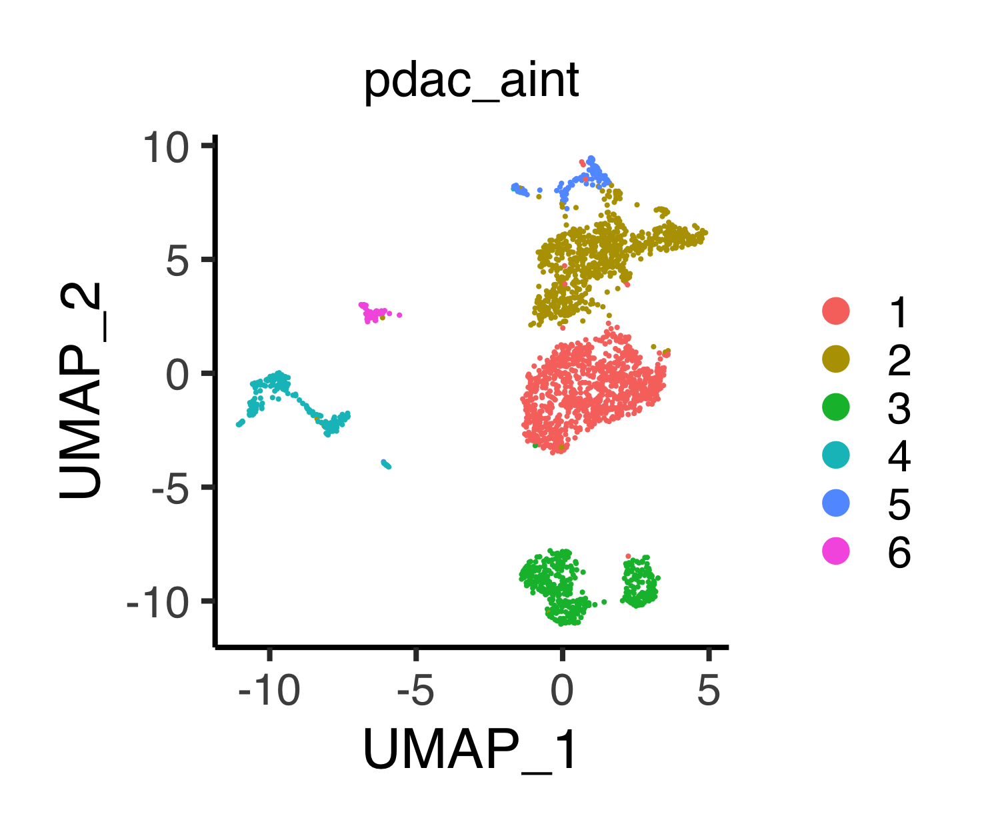
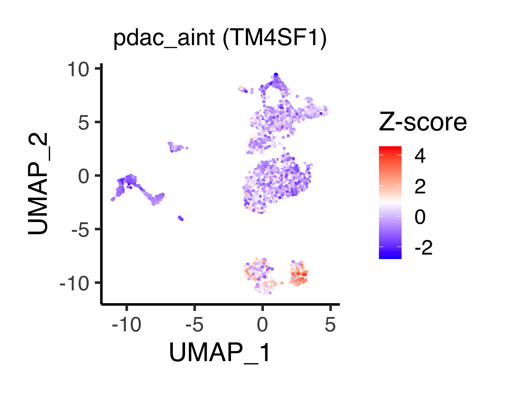
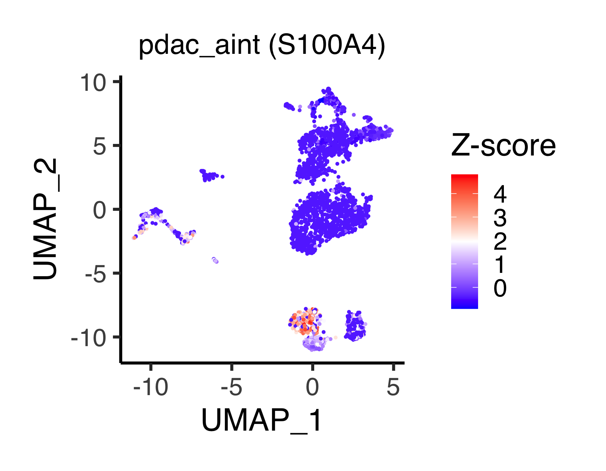

Chapter 5 Data integration
5.1 Integrate PDAC inDrop and ST data by Seurat
Load the data.
source("R/function_general.R")
source("R/function_seurat.R")
pdac_ast1 <- readRDS(file = "backup/05_005_pdac_ast1_normalized.rds")
pdac_arna <- readRDS(file = "backup/06_005_pdac_arna_normalized.rds")The following function do_IntegrateData_seurat() combines two scRNA-seq type
data (here we regard spatial transcriptome data as scRNA-seq type data) into
one Seurat object by using data integration method in Seurat package.
The arguments are obj_1 and obj_2 (ASURAT objects),
nfeatures_1 and nfeature_2 (number of features as top variable features:
we use FindVariableFeatures() setting selection.method = "vst"),
anchor.features (an argument of Seurat function SelectIntegrationFeatures():
number of features used for data integration), and
normalization.method = "LogNormalize" (an argument of Seurat function
IntegrateData(): name of normalization method used).
# ----------------------------------------
# pdac_aint
# ----------------------------------------
pdac_aint_seurat <- do_IntegrateData_seurat(
obj_1 = pdac_ast1, obj_2 = pdac_arna, nfeatures_1 = 3000, nfeatures_2 = 3000,
nfeatures = 2000, normalization.method = "LogNormalize")Rename obj@meta.data[["orig.ident"]].
# ----------------------------------------
# pdac_aint_seurat
# ----------------------------------------
name1 <- pdac_ast1[["history"]][["make_asurat_obj"]][["obj_name"]]
name2 <- pdac_arna[["history"]][["make_asurat_obj"]][["obj_name"]]
tmp <- pdac_aint_seurat@meta.data
tmp[which(tmp$orig.ident == name1),]$orig.ident <- name1
tmp[which(tmp$orig.ident == "cell"),]$orig.ident <- name2
pdac_aint_seurat@meta.data <- tmpPerform scaling, dimensionality reduction, and clustering using Seurat’s standard processes.
# ----------------------------------------
# pdac_aint_seurat
# ----------------------------------------
pdac_aint_seurat <- ScaleData(pdac_aint_seurat, verbose = FALSE)
pdac_aint_seurat <- RunPCA(pdac_aint_seurat, npcs = 100, verbose = FALSE)
pdac_aint_seurat <- RunTSNE(pdac_aint_seurat, reduction.use = "cca.aligned",
dims.use = 1:30, do.fast = TRUE)
pdac_aint_seurat <- RunUMAP(pdac_aint_seurat, reduction = "pca", dims = 1:30)
pdac_aint_seurat <- FindNeighbors(pdac_aint_seurat, reduction = "pca",
dims = 1:30)
pdac_aint_seurat <- FindClusters(pdac_aint_seurat, resolution = 0.15)
tmp <- pdac_aint_seurat@meta.data[["seurat_clusters"]]
tmp <- as.integer(as.character(tmp)) + 1
tmp <- factor(tmp, levels = 1:max(tmp))
pdac_aint_seurat@meta.data[["seurat_clusters"]] <- tmp
pdac_aint_seurat <- SetIdent(pdac_aint_seurat, value = "seurat_clusters")5.2 Identifying differentially expressed genes
Find differentially expressed genes using Seurat’s function and stores the
results into obj@misc[["markers"]].
pdac_aint_seurat@misc[["markers"]] <- FindAllMarkers(
pdac_aint_seurat, only.pos = T, min.pct = 0.25, logfc.threshold = 0.25)Users can check the marker genes of each cluster by the following command:
datatable(pdac_aint_seurat@misc[["markers"]], rownames = FALSE)pdac_aint_seurat
5.3 Inferring cell cycle phases
Assign each cell a cell cycle score using CellCycleScoring().
s.genes <- cc.genes$s.genes
g2m.genes <- cc.genes$g2m.genes
pdac_aint_seurat <- CellCycleScoring(pdac_aint_seurat, s.features = s.genes,
g2m.features = g2m.genes,
set.ident = FALSE)
tmp <- factor(pdac_aint_seurat@meta.data[["Phase"]],
levels = c("G1", "S", "G2M", "Undecided"))
pdac_aint_seurat@meta.data[["Phase"]] <- tmpRename the batch names.
tmp <- pdac_aint_seurat@meta.data
tmp[which(tmp$orig.ident == "pdac_ast1"),]$orig.ident <- "ST"
tmp[which(tmp$orig.ident == "pdac_arna"),]$orig.ident <- "inDrop"
pdac_aint_seurat@meta.data <- tmpThe following function plot_manifold2d_seurat() outputs a ggplot object,
which shows the clustering results between batches or putative subpopulations
in a two-dimensional reduced space.
The arguments are obj_seurat (Seurat object), batch (TRUE or FALSE:
if TRUE, obj@meta.data[["orig.ident"]] is labeled, otherwise
obj_seurat@meta.data[["seurat_clusters"]] is labeled), and
plot_type (one of "pca", "tsne" or "umap").
# ----------------------------------------
# pdac_aint_seurat
# ----------------------------------------
p <- plot_manifold2d_seurat(obj = pdac_aint_seurat, batch = TRUE,
plot_type = "umap", title = "pdac_aint",
title_size = 18, xlabel = "UMAP_1",
ylabel = "UMAP_2", default_color = TRUE)
filename <- "figures/figure_07_0010.png"
ggsave(file = filename, plot = p, dpi = 300, width = 5.5, height = 4.2)
p <- plot_manifold2d_seurat(obj = pdac_aint_seurat, batch = FALSE,
plot_type = "umap", title = "pdac_aint",
title_size = 18, xlabel = "UMAP_1",
ylabel = "UMAP_2", default_color = TRUE)
filename <- "figures/figure_07_0011.png"
ggsave(file = filename, plot = p, dpi = 300, width = 5, height = 4.2) 
The following function plot_integrated_geneExpression_seurat() outputs
a ggplot object, which shows gene expression levels as z-score
in a two-dimensional reduced space.
The arguments are obj (Seurat object processed by ScaleData()),
gene_name (gene name), and plot_type (one of "pca", "tsne" or "umap").
# ----------------------------------------
# pdac_aint_seurat
# ----------------------------------------
p <- plot_integrated_geneExpression_seurat(obj = pdac_aint_seurat,
gene_name = "TM4SF1",
plot_type = "umap",
title = "pdac_aint (TM4SF1)",
title_size = 18,
xlabel = "UMAP_1", ylabel = "UMAP_2",
label_name = "Z-score")
filename <- "figures/figure_07_0015.png"
ggsave(file = filename, plot = p, dpi = 300, width = 5.4, height = 4.2) 
The following function plot_cc_umap_seurat() shows the result of
CellCycleScoring() in a two-dimensional UMAP space.
p <- plot_cc_umap_seurat(obj = pdac_aint_seurat, title = "pdac_aint (Seurat)",
title_size = 18, xlabel = "UMAP_1", ylabel = "UMAP_2",
default_color = FALSE)
filename <- "figures/figure_07_0017.png"
ggsave(file = filename, plot = p, dpi = 300, width = 5.9, height = 4.2)
The following function convert_seurat2asurat() converts Seurat objects into
ASURAT objects.
The arguments are obj_seurat (Seurat object),
orgdb (annotation data package such as org.Hs.eg.db and org.Mm.eg.db),
which is used to convert gene symbols to Entrez IDs, and
obj_name (name of ASURAT object).
pdac_aint <- convert_seurat2asurat(obj_seurat = pdac_aint_seurat,
orgdb = org.Hs.eg.db, obj_name = "pdac_aint")Copy some information.
pdac_aint[["sample"]][["phase"]] <- pdac_aint_seurat@meta.data[["Phase"]]
pdac_aint[["misc"]][["images"]] <- pdac_ast1[["misc"]][["images"]]5.4 Save results
Save the objects.
saveRDS(pdac_aint, file = "backup/07_005_pdac_aint_normalized.rds")
saveRDS(pdac_aint_seurat, file = "backup/07_005_pdac_aint_seurat.rds")Users can load the data.
pdac_aint <- readRDS(file = "backup/07_005_pdac_aint_normalized.rds")
pdac_aint_seurat <- readRDS(file = "backup/07_005_pdac_aint_seurat.rds")